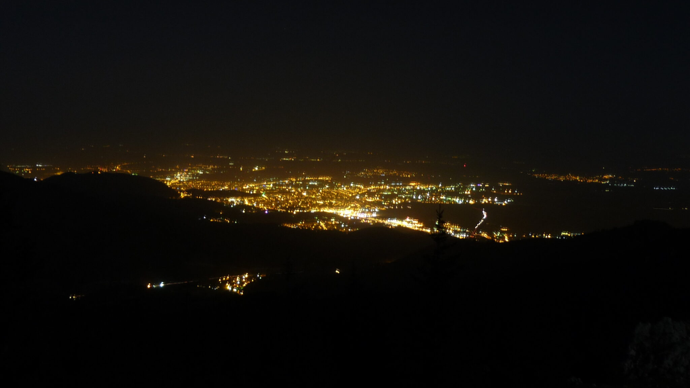

⛰️ Hike • 2014
Tu ce ai mai făcut în ultimul timp?…

Noi am fost în Piatra Mare săptămâna trecută. Sunt multe de povestit și de amintit. Dar cel mai bine lăsăm imaginile să vorbească de la sine…
Poți vedea AICI GALERIA FOTO cu peste 450 de poze ale unui week-end de neuitat! Cabana Scout în Operațiunea “Piatra Mare”…